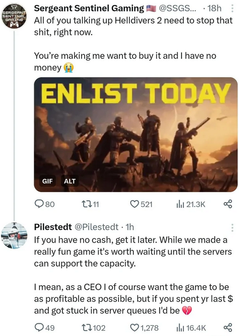

It's 2024, and the phrase "server issues" is uttered for seemingly every new game launch. From the surprise success of Helldivers 2 to the most AAA of releases, players today almost expect things to go wrong. As I write this article, Last Epoch 1.0 is currently releasing to thousands of players, and the ability to play online has been spotty/disabled to resolve "server issues". Why can seemingly no company release a game without "server issues"? Do these companies even test before releasing?
Before beginning, I am a backend software engineer who has worked on Warcraft 3 Reforged, Diablo 2 Resurrected, and an unannounced/recently killed title with Disruptive Games. I have seen firsthand (and been personally responsible for) "server issues" that prevent players from playing.
In this article, I'll attempt to demystify what makes this so difficult, but I also want to make one point clear up front: players deserve better. As games become increasingly monetized and release before being ready, players continually get the short end of the stick. I know some will retort about the "value per hour" of games being lower than any other medium, as if that's a thing that needs to be rectified and made worse, but the enshittification of tech is pervasive and I believe games should hold themselves to a higher standard.
This article is for players who are curious on what's happening behind the scenes when "server issues" are occurring, how we got here, where we're going, recent examples of server issues, and what it takes to get to a brave new world where we can expect game releases to be issue-free. I've written this for a non-technical audience, but have included the technical terminology next to high level descriptions for readers who want to dive deeper.
What are "server issues" anyway?
"Server issues" is a catch-all term for something in the backend not doing what it's supposed to and propagating negative effects to players. If there's something affecting the player that the player cannot see, it's a "server issue". For the backend-savvy, this could mean authentication issues, bugs in service behavior, database throughput/stability issues, and so many more things (and we'll dive into these shortly), but from the player's perspective, the reason why they can't play is insignificant.
The problem with the term "server issues" is rooted in ambiguity. I would break the backend down into the components of "game server" + "backend services" + "database", but if an issue were to occur with any of these, they would be communicated to the player as "server issues", and rightfully so. Players aren't going to care if you're having database issues, or issues with a segfault in your authentication service, or if your game server is crashing when services are too slow to respond.
And thus, "server issues" have created my favorite recurring comment that you can read in any launch day Reddit thread: "why don't they just buy more servers?"
Fortunately, this phrase is used more as a joke these days, and armchair developers will happily jump into the thread to explain "that's not how any of this works", but I should stress that people who comment this earnestly aren't dumb or malicious, they are simply shielded from the backend complexity that no player should ever have to care about. Software engineers are expected to manage this complexity to deliver quality products. The comment "buy more servers" isn't a reflection of the player, it's a reflection of the failure to deliver our end of the bargain.
But why are we failing to deliver our end of the bargain? What makes this so hard? And, seriously, why can't we just buy more servers?
Scaling Up
Quick tangent: let's talk about refrigerators. I'm talking those refrigerators that are freezer+fridge combos, that can also make ice and dispense water from the front panel.
If you've had one of these fridges before, you may have noticed that it's real easy to run out of ice quickly (at least in my family, who drink iced tea like it's water). Our fridge's ice maker throughput just isn't quick enough to keep up with the demand of the iced tea drinkers, and is regularly out of ice. So, how can we remedy this problem to ensure that there's always enough ice for everybody who wants some? It's simple, really: just buy another fridge!
This is ridiculous, of course. Our problem is not that we need twice as many refrigerators, with all of the bells and whistles that they provide. Our problem is that we need more ice, which is just one of the features provided by modern refrigerators today. Instead of buying an entirely new fridge, we can instead just upgrade our ice-producing capabilities, either by purchasing a separate ice maker, or maybe ice trays where we freeze the water ourselves in molds, or even buying ice from the store. While buying a second fridge does help our ice throughput problem, it's clearly inferior to these other options which are cheaper, take up less space, etc.
In technical terms, we only need to "scale up" our ice production, and it's easiest to do that if we consider ice production separately from the entire refrigerator. We don't want to "buy more servers refrigerators", we want to "buy more ice makers".
Distributed systems and monoliths
Continuing with our refrigerator example, we can think of a fridge as a "monolith" in software engineering speak. It is a single server that provides lots of different functionality. Need to chill something? Use the fridge. Want to drink some water? Use the fridge. Drink not cold enough and need more ice? Use the fridge.
A fridge "server" can offer multiple "services".
Monoliths are very easy to conceptualize: a one-stop shop for all functionality. But there are downsides to using them. If your fridge's power goes out, suddenly all of the functionality of the fridge stops working (yes, the fridge stays cool inside due to insulation, ignore that for now). If you've ever been a part of a busy kitchen, you'll also have experienced how difficult it can be to simply access the fridge with all of the chaos: if you simply want an ice cube, you may need to wait for 2-3 people to get out of the way. These issues don't translate one-to-one in software of course, but conceptually, having a single source of functionality also means having a single point of failure, and cascading failure where lots of things can break at once.
A monolithic fridge "server" that breaks means all "services" break.
Let's now envision a coffee shop: the pieces of functionality no longer exist in a single, big product but rather in multiple, small, specialized products. We still have a refrigerator to keep milk cold for lattes, but we also have espresso machines, and dedicated ice trays, and milk frothers, and a cash register away from all of the things needed to make a latte. We call this a "distributed system", because the different pieces of functionality that contribute to the "product" (in this case, making a cup of coffee) are split amongst multiple different "services": a "order receiving" service, a "espresso shot pouring" service, and "milk insertion" service, etc.
A coffee shop "server" can also offer multiple "services". Note that the customer only interacts with a few services, not all of them.
Distributed systems are the majority of software backends built today (including games, and we'll get back to that in just a second), so it's important to understand their pros and cons. First off, "scaling up" a coffee shop's coffee throughput is simpler, as we can understand where our bottlenecks are.
If the cashier can take 2 orders every minute, but the espresso shot service can only do 1 order every minute, we can identify the bottleneck is the espresso shot service, and accordingly scale up our espresso machines. By adding another machine, we can make 2 shots per minute, matching our cashier's rate. By creating a distributed system, we have created the ability to "just buy more servers espresso machines" rather than needing to "just build another coffee shop".
We "scaled up" the espresso shot service from 1 machine to 2 (orange dotted box).
But distributed systems add complexity, and complexity is how bugs and oversights occur. A coffee shop necessarily needs all "services" to be fully functioning in order to produce coffee. If the "order receiving" service shuts down, no espresso shots will be poured. If the "espresso shot" service stops working, there's no coffee for the "milk insertion" service to be useful. Human beings are very good at solving problems and adapting to situations, but software is often not built in ways to handle these failures gracefully.
Additionally, it's not always straightforward to understand what needs to be "scaled up" until issues occur. If we add more cashiers to handle more coffee orders, we need to remember to add more espresso machines. But what happens if we discover that at 10 cashiers + 10 espresso machines, our milk jugs we have always ordered before are suddenly not pouring quick enough? Is it enough to "just buy more milk jugs", or do we need to invest in wider-mouth milk jugs that pour quicker? Services that depend on other services (like our espresso machines rely on getting new orders from the cashier) are called "downstream services", as the work "flows downstream" from the cashier to the espresso machine. Often, these downstream services are negatively affected by "just buying more servers", as we'll see later.
Modern game backends
Many modern game backends are "distributed systems". There is more than one "server" that makes their gameplay experience work. More specifically, when you are playing a game online, there are multiple servers (read: separate computers) that are doing work in order to provide all of the functionality that makes up a game.
The reason for this is pretty simple: we want to be able to "just buy more servers". If our game servers were monoliths that also contained matchmaking functionality and friends list services and authentication/login services, it would be far more difficult or wasteful to "just buy more servers". Instead, we'll consider what features our game is offering, and separate those features into different "services".
The Game Server
The "game server" is responsible for running the "game simulation" for whatever game you're playing. If you are playing a game of League of Legends, 10 people total are connected to the "game server". This "game server" is responsible for all of the logic of League of Legends: can you cast this spell given your current mana? can you buy this item given your current gold? did you get a last hit and should be awarded gold? The concept of "game server" is what most people think of when they hear "server", which is unfortunate, as most of the problems in a game's online stability actually happen in "services".
Services
Commonly, these "servers" that aren't running gameplay simulation logic are called "services", as they enhance the experience without being directly related to the gameplay (there's some gray area here, but work with me). To clarify terminology, a "server" is a computer that provides one or more "services". In practice, I use the term "game server" to refer exclusively to the server running the simulation, and "services" to refer to all other functionality.
For example, receiving a direct message/whisper from another player isn't being handled on the game server, but rather by a separate "service", which is often an entirely different computer. Seeing the matches you've played previously is also at least one other "service".
For example, let's use Diablo 2 Resurrected, which is a game who's backend I helped build. When you login, your game connects to an authentication service to verify you're allowed to run the game. You can either quick play or find an existing game using a matchmaking service. The matchmaking service provides you the information of a game server, which you connect to in order to actual kill monsters and pick up loot. All the while, your client is connected to Battle.net services where you can see your friends and whisper them, etc.
This isn't actually what D2R's backend looks like, but is a good enough illustration for now.
Why we can't just buy more servers
So we have game servers and services, and they interact with each other to create a "gameplay experience". Why can't we just buy more of each of them?
Let's start with game servers: well, actually, yeah, turns out you can just buy more game servers. Seriously. If each game server can hold 10 players, and you have 100k people online, you need 100k / 10 = 10,000 game servers. If you had 5,000 game servers before, you can quite literally buy 5,000 more game servers to meet the need and you're set. Because game servers are just running game simulation logic, you can just run more game servers to solve this problem. We're not buying a new refrigerator to add more ice production, we're just buying new ice makers. Neat.
Okay, well, what about services? Can we just buy more services? The answer is yes, kinda, with some effort. Think back to our coffee shop example: if we add more cashiers to take orders quicker, we better be adding more espresso machines, otherwise those orders will just be waiting for our existing machines to finish. And it's not like we can just add infinitely more espresso machines: they take up space and consume electricity. There's always a cost to scaling up services, and it's not always clear what effects it will have on those "downstream services".
Backend servers interacting with each other creates lots of opportunities for failure. Imagine a bug in the game server that would send too many messages to the matchmaker, such as "match finished". If every game server is erroneously sending 10x the "match finished" messages (for example, one for each player rather than one message total), the matchmaker is suddenly - through no fault or bug of its own - 10x busier with messages and more likely to break.
This game server bug sends too many messages, and causes problems for the "downstream" matchmaker service.
There are mitigations to this, such as introducing "rate limiting" (meaning we'll ignore new messages if we receive too many too quickly), but this can ignore real messages with data we care about, which itself would be a bug!
The matchmaker service can "rate limit" and ignore messages when too many are sent, but we could be ignoring legitimate messages in this case.
But for now, let's entertain the idea that we can simply "buy more services". If our matchmaking service can support 10k people at once, we simply need 10 matchmaking services. Don't have enough? Run more.
For now, the main obstacle preventing us from "buying more services" is persistent data.
Persistent Data
What makes games and online experiences interesting is persistent data. Persistent data is any bit of information that we want to keep between play sessions. If every time you logged into League of Legends and your friends list was gone, you owned no champions, and had no rank placement/ELO, your will to continue playing the game is probably near zero. I'll make the assertion that persistent data is the most interesting part of online experiences, and the hardest to get right.
What persistent data do modern live-service games store? Damn near everything. Again using League of Legends (which I haven't worked on, but can guarantee exists as persistent data):
friends/social graph
purchases (champions, skins, rune pages, etc)
matchmaking info (unranked rating, ranked rating)
match history (win/loss, player IDs in match, duration)
match details (champion played, gold earned, KDA)
waaaaaay more things
Imagine if you woke up tomorrow and all of the data and playtime you had in a game was completely wiped, no longer persistent. Would you still play this game? With rare exception, I would drop every game I currently play if this happened.
So we need this data to be persistent, and ideally we need it quickly. Where do we store this persistent data?
Process Memory, and why we don't store data here often
Let's revisit our coffee shop. Imagine you order a simple latte every time you go in, and the cashier begins to recognize you and memorizes your order. If another cashier starts working at this coffee shop, they will not recognize you nor will they know your usual order (they just started working here, after all). In this example, we can say that the cashier that remembers you has your order in their personal memory, and it is not shared with other cashiers as a shared memory (eg a sticky note next to the cash register).
One barista remembers our order, and the other doesn't. Human beings don't have telepathy and sadly cannot share our memories.
Extrapolating this to software, let's say one matchmaker service loads your data when you ask to find a match. When you finish your match and try to find another match, we can't be sure that our request will go to the same matchmaker service that "remembers" us. This memory is called "process memory" in software engineering ("process" being the term for a program running on your operating system), and is not shared between services of the same type. Our coffee shop cashier in this instance has our order stored in their "process memory".
As an example, say our matchmaker service was able to remember up to 50k players and make matches for them at the same time. What happens when another 10k players log on and want to play? What happens when the matchmaker starts struggling, and we need to "just buy more matchmaker services" to keep up with the demand?
All of our players are "remembered" by one matchmaker service prior to scaling up.
Great, let's spin up another matchmaker and...oh. We have two matchmakers, each "remembering" 60k players. Surely that means pretty soon we'll need to spin up yet another matchmaker, and all of a sudden just buying more matchmakers gets increasingly less effective.
After scaling, both matchmakers need to know everything about all players (as we can't be sure which matchmaker a player will be served by). As a result, our scaling up isn't very effective, as we still need to remember a whole bunch of data!
A common response to this is: not all matchmakers need to remember every player, and surely we can send some players (account names A-J) to the first matchmaker and some players (account names K-Z) to the other. This is a real approach, and it's called "sharding". While sharding may alleviate this particular example, what happens when 10k new players login? What if they were all named "progamer1" through "programer42069"? Is one matchmaker doing more work than the other? If we need to add a third matchmaker, do we need to "re-shard" and move players between matchmakers? The sharding solution, while solving some problems, has created new ones as well.
With sharding, our services don't need to "remember" everything about all players, but now players must be serviced by a specific matchmaker rather than any available.
Another important facet we won't explore too deeply in this article is modern software deployment strategies. If you deploy to AWS or Azure or GCP or whatever, you do not own the computer these services are running on. At any time, the computer can go offline or otherwise stop your running process. This is the reality of cloud computing, and backend engineers understand this. Accordingly, we build services such that might die any second, which means not keeping any persistent data in process memory. If you want it to stick around, you need to save it elsewhere.
I haven't even mentioned what happens when a service process crashes: all of the stuff it "remembered" goes away. That is obviously unacceptable, as even the best engineers will occasionally write unsafe code that can crash.
Okay, so keeping persistent data in service memory isn't a great idea and has some difficulties, and it prevents us from "just buying more services". Can't we put it somewhere else instead?
Databases
Back to the coffee shop. Instead of the cashier keeping our favorite latte order in "process memory", what if they wrote it down instead? That way, any cashier that saw our face could look in their "regular customer orders" notes and look up our order. This would be a "shared memory", such that all cashiers could "remember" our order once they saw us by looking up our order. It's not "remembering" in the human sense, but if a cashier you had never met knew your order before ordering, it would certainly feel like they "remembered" you somehow.
Rather than personally remembering your order, the barista now looks up your order. If you're unaware that they have this lookup system, it would feel like they "remembered" you.
We can do something similar with our game's services. Much like we decided to move functionality out of the game server earlier, we'll now move the persistent data out of our services and into dedicated "data storage services". These are more commonly known as "databases": their sole purpose is to quickly and reliably store and retrieve persistent data. Databases, both in software and in hardware, are optimized for data storage and retrieval, but ultimately is just another "server" for our game server and services to interact with.
An example backend for a live service video game. Game servers and services store and retrieve data from a database rather than "remembering" it themselves.
I'm not going to be discussing in-memory storage options like Redis or memcached in this article. These are real considerations for backend engineers and their products, but tangential to the overall point I'd like to make in this article.
Our backend is getting progressively more complex, eh? This is the cost of being able to "just buy more" game servers. In order to make scaling up game servers simpler, we moved some complexity to services. In order to make scaling up services simpler, we moved some complexity to databases. The system grows ever more complex, meaning a lot more can and will go wrong, but with the goal of having more servers online and available for players to play.
But we're still not done, and doing databases properly is arguably the hardest part of the entire equation.
So, can we "just buy more databases"? I'm obscuring a lot of ideas with this answer, but ultimately, no. We cannot just buy more databases. There are a few issues we'll investigate shortly, but above all else, getting your database design wrong up-front is catastrophic. On Diablo 2 Resurrected, we got our database design wrong and it required months to properly rearchitect.
So what makes databases hard? First and foremost, databases are necessarily a single source from truth. If we had two databases with different data, how would we know which one was "real"? Do we need to ask every database and confirm all data is the same before trusting it? Fundamentally, for a database system to be effective, we must trust that the data stored inside of it is real, and just buying more databases doesn't get us any wins.
Yes, technical readers, eventual consistency is a thing and throws a wrench into the above. That's a concept far beyond the target audience for this article though. For now, let's pretend that SQL is the only thing that exists and distributed systems never fail (as I try to manifest every day).
Second, the way you store data in the database matters (for SQL fans: I'm talking about "indexing" and "schema design" here). Let's go back to our coffee shop. If we wrote down our regular customers' orders on pieces of paper, it'd be a good idea to have a dedicated "customer orders" folder to store those orders in. If we instead stored them in a single stack of papers, mixed in between our tax documents and recipes for our signature lattes and menus, it would be a lot harder to find these orders, and could be slower than just asking the customer for their order again.
Obviously a single stack of all papers sounds dumb, and no database schema is designed this way in practice, but even well-reasoned database designs can have issues with lots of customers. You might think sorting customer orders alphabetically is a good idea, but what happens when you have two "Joe Smith" customers with different orders? How do you differentiate the two? Once your business grows large enough, will you need a second "customer orders" folder for last names K-Z, "sharding" your customer orders folder? Design decisions you made for 10k users often don't work too well for 100k users/1mil users/10mil users.
Finally, and I'd say this is where games fail most often: how do you test your database design and make sure it actually works with real players with their real data?
Why didn't you test this before launch?
As a backend dev, I promise you: we did test before launch. We may not have tested the right things, or at the right scale, or under the right conditions, but we did test. A lot.
This is another platitude that doesn't land well with players, and for good reason. Again, players should not need to care about the game development process to appreciate and enjoy a game. However, I take particular offense to this comment (vs the "buy more servers" comment) as this implies some level of laziness or apathy on the part of game devs.
You can certainly always test more, but the returns on testing are dubious at best. If we test for 10 more hours and find no issues, was it worth it? 100 hours? 1000 hours? Similarly, there are infinite numbers of test cases to run (players logging in at different rates, some players logging out, some players trading items - all of these at the same time with different number of players doing each), and in practice only certain permutations of conditions will actually manifest in issues. If a game you were anticipating was delayed for 2 months so the backend team could test, is it worth it? For you, the reader, probably yes since there's so many good games to play, but to the publisher who is looking for a return on their investment?
This isn't an endorsement of the game industry's lack of emphasis on automated testing, but rather an observation. Every backend engineer wants nothing more than to launch their game successfully free of issues, and every publisher wants nothing more than to see a monetary return on their investment. These goals aren't necessarily at odds, but from experience the backend engineer doesn't necessarily have leverage. It's rare to find employment where you can reasonably advocate for more testing + runway to address issues, especially if you've already been doing load testing and haven't found any major issues.
And while I'm focused mainly on automated testing and load testing, which is done autonomously by backend engineers and specialized QA, this point goes for testing as a whole. A team of 15 QA members who plays the game their entire 8-hour shift every day for a 3-year dev cycle is a cumulative 93,600 hours of playtime (the majority of which was finding bugs or issues, which have since been fixed and thus those hours are not applicable to the end product). This means if you have 100k players on launch day, players have played the game more in the first hour than your full-time QA did over the past 3 years. Advocating for more time to test prior to release is a tough ask once all the features are "done".
This isn't to say QA isn't valuable - I believe good QA members are the most valuable members of the team, and have a better understanding of your game's strengths and weaknesses than anybody else on the team - but rather that what you test matters more than how much you test. And on the automation testing front, games are incredibly hard to test the right "what".
The Perils of Automated Testing in Games
As a whole, there isn't a lot of open-source or readily-available solutions for automated testing of games in particular. Standard web dev testing methodologies like HTTP load testing are somewhat effective in games for your services, and they should be used, but inherently game servers are not just web servers.
Game servers are big, complex amalgams of game simulation data (called "state") and player data, and they need to be tested in ways unique to your game. So, how do we test game servers if the game simulations they're running are unique and special?
Frank Herbert's Dune has the answer: thou shalt not make a machine in the likeness of a human mind.
Building Automation for Games Is REALLY Hard
We have definitely tried to make machines in the likeness of the human mind. I choose to read Herbert's quote like a prophecy: we shalt not because we cannot.
I'm partially joking here, as there's no firm technical barriers preventing game devs from doing so, but the return on investment is astronomically bad. Let's summarize up front then break down each point. We need automation software that:
can save data to verify that saves/reads from the database work as expected
invokes real game functionality on the server that mimics player behavior
behaves like a real client, from game start-up to loading into the main menu/frontend into matchmaking into a game server
can be run 100k times concurrently (to create load on the services), and can receive instructions from a remote computer (since we can't run 100k processes on one computer)
Let's work backwards here. In order to run a load test of 100k automated players, we need to run this process 100k times, at the same time, in order to replicate the environment in which we have 100k players on launch day. We're definitely going to need to get some computers from AWS or GCP or Azure to do so, and even if we could run 1000 processes on one box (good luck), we're still renting 100 beefy machines to run this singular test, and we're surely gonna find issues we'll need to fix, meaning we'll need these 100 machines multiple times. We're paying by the hour for these computers by the way - I don't want to be the one to tell our publisher that.
And if you think there's no way we're running 1000 processes on a single box, you're doubly right. It's highly, HIGHLY preferable to have a "headless client" (meaning no window is created for the process - like playing a game without a monitor) which saves a bunch of resources and allows you to fit more clients on a single machine. Unless you plan for it from day one, or your engine supports headless clients out of the box, it is a LOT of work to get headless clients working for games. Bear in mind this is throwaway work: no player will ever use headless client mode, so this is only useful for your testing. Is it worth it?
Next, we need automation that goes through real flows that a player would. Having your automation client magically connect to game servers without matchmaking is bypassing one of the most common "server issues" modern live service games face. If you're silently creating a player account under the hood in the database when a player logs in, you better be having all of your automation login at once, because your players are definitely going to be slamming your servers - hard - all at once.
And then, once all of those clients have gone through matchmaking and are in a game, they need to be doing meaningful things. Just having clients sit around and verify they are co-existing in a game server is cool, but players aren't gonna be cool with a glorified IRC room. Your automation needs to be actually doing things, and this by far and away is the hardest part. Imagine all of the things you would do in a single hour of Dota 2, or Diablo 2, or WoW, or Slay The Spire - any game of your choosing. Now how would you program those actions into an autonomous client? Did your hour of gameplay even come close to all the stuff you can do in your game simulation?
Finally: we need all of our automated players to create, load, and delete save data, as what's the point of all of this testing if we can't verify our persistent data is indeed persistent. This means each of these accounts needs to have an account created in the database, each game server needs to load and write to each players account, and each player account needs to be creating meaningful save data. Verifying that each player as an account in the database is a great first step, but it's far from sufficient. Does their account update with new save data?
And just so we're clear, if we had this magical automation software that could behave like a real player in all facets of gameplay, our anticheat teams would be taking copious notes on how to prevent software like that from ever existing in the wild. Cheat developers have spent decades creating bots in games like Runescape, yet real players can identify bot behavior nearly instantly. Something that can reach are lofty goals of replicating player behavior is, in my view, one of the hardest things to achieve in automation.
So, all together, pretty easy, eh?
This isn't to say you need to do all of these steps to have "properly" tested, but rather the level of effort involved in testing even simple gameplay actions is very, very high, and the return on investment isn't great. Human QA is great at being humans, and test automation is great at generating load, but generating load that behaves like humans is incredibly difficult in games.
Failure is inevitable, so do it early
Before I left the Diablo Legacy team at Blizzard in July 2022, the Diablo 4 team had begun load testing for a very large number of players, I think in the 500k range. To that point, the game had not yet had any public access whatsoever. Many of our learnings from D2R included "we wish we had tested sooner" and "we wish we had tested more", and to the credit of the Diablo org, those lessons were integrated in Diablo 4's production cycle and load testing prior to launch was a priority. While I'm not sure how those load tests went internally, I do know how the first public betas went: poorly.
I know Blizzard has fallen out of the zeitgeist of "quality games companies" to many, but the backend engineers, SREs, and QA on Diablo 4 are some of the best and brightest I have ever worked with. With the support of the org, they were load testing for at least 9 months and still had issues with their public betas. Shockingly, Diablo 4's official launch in June 2023 was the smoothest Diablo release ever. How could the Diablo team have so many issues after 9 months of load testing, and yet resolve the vast majority of those issues in 3 months before launch?
In my mind, the answer is pretty simple: we make games for human beings, and human beings are better at being human beings than autonomous clients are at being human beings.
The quality of data the Diablo 4 team got from the public betas was far more valuable than internal load testing because it was representative of what real players would do (because real players were doing those things). This manifested in a pretty poor experience for players of the beta, exclaiming "did they even test this?!", but ultimately resulted in a test where the issues players could hit were hit and could be fixed as soon as possible.
I don't want the takeaway from this to be "don't test, players will find the real issues for you", but I think there's a learning opportunity for large-scale, real player testing as a stepping stone to smoother releases for games. Players and devs alike want the game launch to be stable and successful, and gambling on the first public playtest to be that perfect experience is very, very, very, very bad odds. I think we'll see a lot more companies give free access to the game in the form of a "public beta" in exchange for 10% off, or exclusive microtransactions/cosmetics, etc. I would very much like automated testing to improve on the game dev side, but this feels like a middle-ground solution that makes things better for players right now.
Last Epoch
The flipside of this is Last Epoch, which launched today as of this writing. Their game has been "out" in early access for years now, and is now experiencing "server issues". What gives?
This section isn't meant to single out Last Epoch in particular. Path of Exile, a game that had been fully out and relatively stable for 8 years, hit database issues with a routine content update. This is just to emphasize again that testing is hard: Path of Exile only encountered this issue by using real player data, and their internal test data that had worked for years was suddenly not good enough.
Last Epoch's previous CCU peak was 40k, in March 2023 (the release of the multiplayer update). Their CCU today was 150k. I guarantee they forecasted and tested to a similar value internally, but again, real players don't act like bots. Real players don't get disconnected and patiently wait 10 minutes for a tweet, they spam the daylights out of the "play" button. The unofficial workaround for the Helldivers 2 login issues were "spam spacebar until you're let in". Until you get hit with real player behavior, all bets are off.
Here's a quote from Judd Cobler, CEO of Last Epoch's developer Eleventh Hour Games:
In particular, I want to dig in on this particular quote:
it's nearly never the game servers that have issues at launch as those are easy to scale as long as you have the funds and willingness to pay the server providers (typically Google or Amazon), it's more often an issue with services like login/authentication/database rate limiting
To rephrase, you can buy more game servers, but you can't really buy more services.
So how did launch day go for Last Epoch? In this screenshot, 228k CCU, but it went up to 264k later in the day.
And there you have it: Last Epoch's "services" (the stuff that's pretty hard to "just buy more" of) failed in ways they didn't account for in their testing. Thankfully, players were understanding and didn't lash out at the develo-
I have so much more to say on the topic of developer-player communication, but that's an article for another time. Players, like developers, are human beings that get emotional and lash out. This lashing out results in developers that communicate less with their players, and communities that grow increasingly angsty about a "lack of communication". It's a vicious cycle.
I love Eleventh Hour Games and Last Epoch. I had 275 hours in early access, and I've watched the game grow from a solid action RPG to a trailblazer in the genre causing PoE to catch up with their innovations, and I hope that the harassment they are receiving now doesn't dissuade them from the excellent communication with players they showed throughout early access. Their launch day brought in thousands of new players, which when coupled with "server issues", results in a huge wave of harassment that can be overwhelming. All this to say: getting your launch day right means not only happy players, but also peace of mind and security for devs.
Let's Talk About Helldivers 2
We need to acknowledge what a unique and difficult situation Arrowhead Game Studios, developers of Helldivers 2, have found themselves in. Anybody who would claim they expected this level of success or popularity for Helldivers 2 is lying through their teeth.
The original Helldivers had a peak CCU of 7k from my various Google searches (please correct me if any one has different numbers). Helldivers 2, at time of writing on a middle-of-the-week-people-are-at-work Tuesday, is 392k Steam CCU. That's not even the peak for today, and this doesn't include PlayStation players. This game could very well reach 2 orders of magnitude higher than the original game. This is without a doubt the wildest game release I have ever seen.
If you were told to design a bridge that could support 500 cars simultaneously (as in, only 500 cars could fit bumper-to-bumper), how much weight would you design that bridge to hold? Maybe you conservatively assume each of the 500 cars is densely packed with steel, such that, in the absolute worst case, you can guarantee your bridge stays up. You really don't expect 500 cars packed to the brim with steel, but in the name of safety and stability, you design your bridge to support that.
And then 500 cars filled to the brim with tungsten roll onto your bridge and it collapses.
As a developer and someone who has endured crunch and feelings of disappointing players: I can deeply empathize with Arrowhead devs. The feelings of celebration, relief, and joy that they could've been experiencing with 100k CCU have been entirely replaced by frustration, guilt, and exasperation with 450k+ CCU. This project was years of their lives, and lots of people are talking about "server issues" instead of the gameplay itself (which is excellent!).
But players shouldn't need to empathize for every developer for every game they buy. It should be expected that they buy a product and the product works immediately, and if it doesn't they have avenues to be refunded. And Arrowhead's CEO, Johan Pilestedt, echoes similar thoughts in the below tweet! It's refreshing to see a CEO advocate that players don't buy the game and instead check in later. Final Fantasy 14 stopped selling copies in order to combat "server issues", and that may be worth remembering for future game launches.

Additionally, Pilestedt notes that the backend team 5x'd their architecture design's maximum in a week of work. This provides some insight into their original estimates, and really drives home just how much damn tungsten they can pack in cars these days.
Taking the actual CCU of 450k divided by 5 (given that they are currently 5x larger than their original design), it sounds like the original estimates placed the game around 75-100k CCU. As a reminder, Helldivers 2 is published by Sony Interactive Entertainment, who have published quite literally hundreds of games. There are very few publishers who's estimates are based on decades of publishing experience. If SIE gave me a CCU estimate of 100k, I'd absolutely trust their numbers at face value, maaaaaybe designing a backend for and testing up to 125k for peace of mind. Designing and testing for 450k CCU would have never even come up as a rational target.
To rephrase this in our recurring coffee shop analogy: if you planned for 10k customers in a day, how would you serve 50k customers? Even if you could purchase more cash registers and espresso machines, there's not enough room in the damn building to place them. There's no way you have enough coffee beans for 5x the people you planned. Scaling up doesn't just mean buying more cash registers and espresso machines, it means expanding the building or getting a second location and ordering way more coffee beans. All of this takes time, and for Arrowhead's backend engineers to pull of a 4x-5x increase is a testament to their commitment to improving things for players. But it takes time.
So to summarize my thoughts:
the wild popularity of Helldivers 2 was far, far beyond Arrowhead and Sony's projections, and backend service architecture decisions made early in development cannot scale up any further without redesigning what they have (which takes time, as they're building from scratch)
Arrowhead Game Studios deserves our sympathy for their candor and efforts in getting the game stable
Players deserve a working product immediately, and should be offered refunds until that state is met
And it goes without saying: if you ever send death threats or personal harassment to devs or any human being at all, you're a piece of shit and should be banned from online games
So where do we go from here?
Whatever it may be, I need to take this opportunity to reiterate how much money games are making. Game devs work hard, and deserve financial compensation and job security for their work; players deserve products that work the first time (are you sick of this point yet?). Instead, we seem to have reached a sort of inversion where players receive half-functioning games and devs receive 3 months severance pay (if they're lucky). It sure feels like the crazy popular success of so many games in 2023 and 2024 games indicates that lay-offs in game dev are incredibly short-sighted and unnecessary?
Without external action (eg players boycotting), it certainly seems like this cycle will continue until sales stop. So what can backend devs do about it?
Login Queues
Login queues are a necessary evil for backend stability. If you load tested for 50k and feel reasonably confident about that number, add a login queue such that your max concurrent players is 50k. I know that feels bad, but 50k people enjoying your game is significantly higher than 0 if things go down and you need manual intervention to recover. You can incrementally bump this number over time to find your "true" limit as well.
We used this approach on Diablo 2 Resurrected prior to the database architecture revamp, and it was one of the most useful tools in our arsenal to keep things stable. We even built automation to tweak the rate twice a day - once to a "default" value, and once to a "high demand" value that we knew always correlated to one region coming online near simultaneously (global login graphs are super cool to study if you ever get the chance).
I highly recommend the GDC talk 10 Ways to Crash Your Server on Launch Day by Chris Cobb, CTO of Pragma, which discusses various strategies for more stable launches. Point number 1 is login queues, and for good reason.
Backend as a Service
Speaking of Pragma, I believe backend-as-a-service offerings will be increasingly more popular over time due to the complexity of building your own backend. I'm not advocating for any specific offering like Pragma or Accelbyte or Gamelift, but exploring the train of thought that reducing the surface area of what you need to test is vitally important. Knowing that your matchmaking service and account service and authentication service, etc, have all been battle-tested at least in part by other launched games is great, and allows more focus on your truly novel logic like your game simulation.
Investment into Automation
If I were a gambling man, I think this is where I'd bet the majority of innovation comes in the next few years for games. It's clear as day that players are very aware that games will launch poorly. Being able to market yourself as a proven "launch day success" factor would be a huge selling point to basically every gaming company in the market, from indie to AAA.
Nothing Happens
Maybe my read of the landscape is wrong. Maybe players are perfectly fine with poor launches, because in a couple days (weeks, worst case), the game will be playable. Maybe devs are throwing away work on automation when those dev hours could be spent on features or new content.
I hope not though. First impressions matter. Candidly, I haven't played Helldivers 2 since launch, as none of my progression was saved. Will I come back to it in two weeks? A month? Probably not, and through no fault of the devs. There's simply too many games that I want to play and too many new titles that I want to buy.
And it's certainly easier to buy more games than it is to buy more servers.